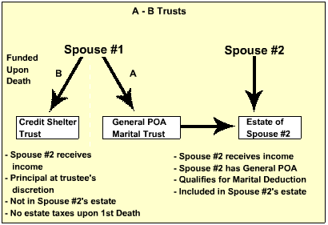

|
|
The General Power of Appointment (POA) Marital Trust
The oldest type of Marital Trust is the General Power of Appointment (POA) Marital Trust.
In this arrangement, the surviving spouse has a “General Power of Appointment” over the assets in the Marital Trust. What that means is that the surviving spouse can appoint those assets to whomever he/she chooses, even to himself/herself. This arrangement would certainly address Mr. Dollar's concern that his wife be protected from the burden of handling the finances, since the assets can be handled by a competent trustee. The terms of the trust could also read that upon the death of the surviving spouse, provided the General Power of Appointment is not exercised, the trust is to continue for benefit of the son who has Lou Gehrig's disease until his death, the terminating and being distributed to the children or their surviving families.  For a more detailed summary on the General POA Marital Trust, proceed to the next page.